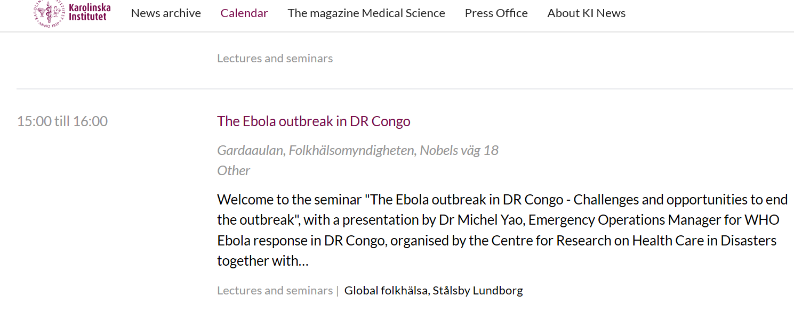
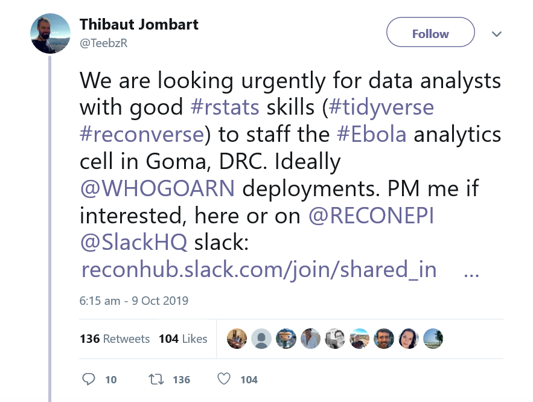
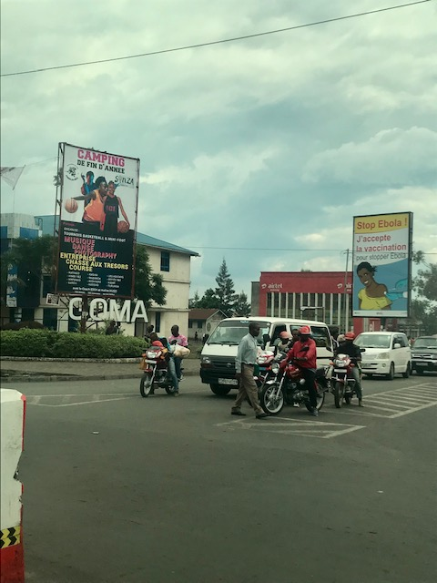
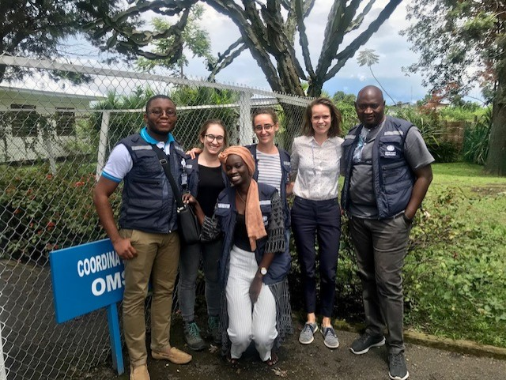
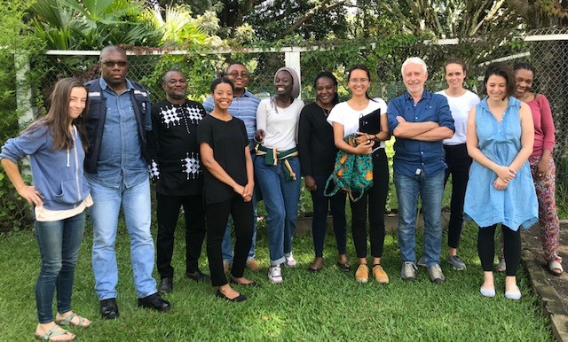

How it all started!
On September 11th, Dr Michel Yao, WHO Incident Manager of the Ebola outbreak response was invited at my home institution to give a talk on the outbreak. I attended the seminar and went on asking him several questions on the response at the end of his talk. I noted his contact information but we never talked again (at least until I went to DRC).

On Oct 9th 2019, I received an email from a colleague with a link to a tweet and the following message: “This seems really interesting. Might be worth it to get in contact “. I opened it a few minutes later and saw the following tweet:

Ana (my colleague who sent the e-mail) knew how much I wanted to do some fieldwork in Africa, and we discussed it several times and were sharing any opportunity we would come across. With the biggest excitement, I tried to contact Thibaut on tweeter, but his DMs (direct messages in tweeter) were closed. I then googled his name and finally found his two main e-mails and right away sent an e-mail with my CV.
The following weeks, after two interviews and a few calls, were full of email exchanges, administrative procedures, medical check and vaccines. On October 31st, exactly 3 weeks after that tweet and that first e-mail, I was in my flight to GOMA, DRC, to start what would be one of the richest scientific and human experience of my life.

The magic inside it!
I was amazed by the dedication of the responders I have found there and their generosity in knowledge, as it should be for any scientist.Working within the analysis cell, which is central to the response information was a great honor. I had the opportunity to quickly learn about the cell’s main activities and the response’s key information through all the other colleagues, would they be medical doctors, data-managers or experts in Monitoring and Evaluation. Working abroad, on an emergency is always difficult, but the good relationship between colleagues (that actually became family) is what helps to cope.

The second thing I was the most amazed by is the structure of the reportfactory that I have discovered shortly before joining the response. At first, you read quickly, and things sound obvious for an R-user. Then you start using it and you find out all the great and big work that was made behind. The different databases collected throughout the response are updated almost every day and this idea of automated reports using the updated datasets is very effective. Again, this is an emergency and time is more than ever priceless.

Packages as linelist will be forever useful in this kind of situation. To make you (who do not know what the databases we receive on a daily basis may look alike) understand, let’s take the “alerts databases”. Anytime somebody is considered a potential Ebola case, an alert is sent with many information on the person. Since such system did not exist before the epidemic, in each area, the local surveillance team had started their own templates. Thus within one R project, the handy linelist allows to handle compilation of the different .Rmd reports made for each database (from the different areas).
Later, efforts were made to try to have the same templates but we still receive alert databases with different variable names, or plethora of misspelling in the health zone/area among other data entry mistakes. Some functions of the linelist package allow then, with a few lines of code, to get rid of all those misspellings and kind of “homogenizes” the different datasets that we would have for the same information (here the alerts). Beleive me! It is so so so hepful! You have to see the raw databases to have an idea of the magic behind these commands.
And by the way, my favorite command is clean_data! You need not to work on a very messy dataset to use it. It can be a time-saver for any data management work!
What I certainly appreciated the most is seing the practical impact of our work on a daily basis. Even though, working as an analyst within the cell involves a great deal of coding, it was not about coding only. It was also lot of meetings with epidemiologists, data-managers, social scientists from the ministry of health and other partners (MSF, CDC, UNICEF..). Lot of interesting discussions that would happen during a walk (when it was not raining!) or around a lunch, with different approaches that would be difficult to have if not in the field. And of course our best moment of the week was after the weekly presentations of our results during the coordination meeting. Because of a big feeling of release after long discussions and hard work but also a feeling of excitment following the useful/challenging questions that would be raised during the pesentation where all partners/funders included in the response are represented.
Mot de la fin (To conclude)!
I was not supposed to be long, but this work is so interesting that I have so much I would love to share, but I will let the opportunity to the current and future deployees to talk about other functionalities of these packages.
To conclude, in a few weeks I became a better scientist, a better R-programmer with better epidemiological skills and most importantly, a better and stronger human being. And, mainly for this last point, I will forever be grateful to RECON and WHOGOARN.

To the future deployees: Good luck! You won’t regret this experience! And hope to meet you soon in other deployments!
Asante sana (thanks very much in swahili) to all lovely colleagues! Happy new (Ebola-free) year!
Contact: Aminata Ndiaye Twitter.